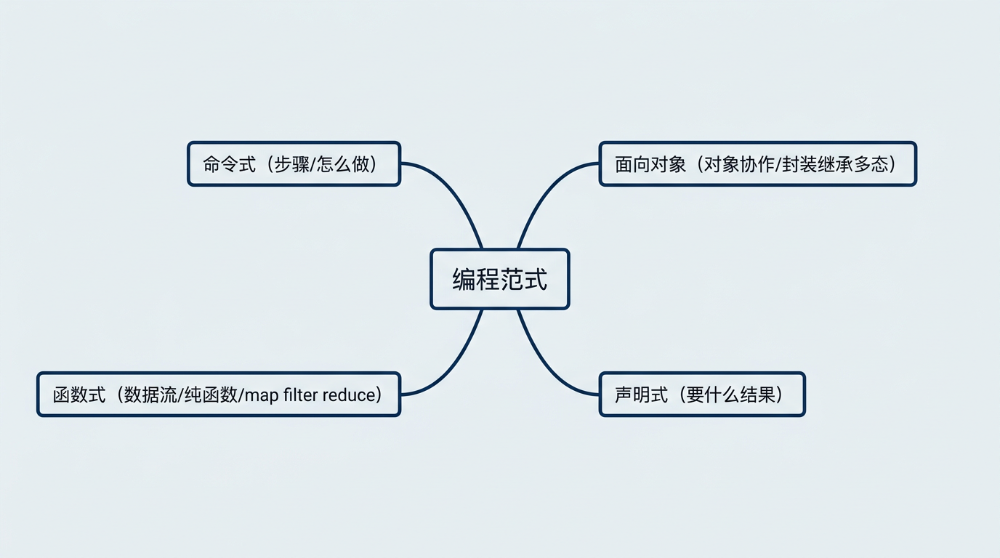
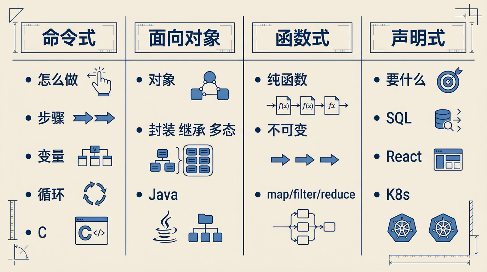
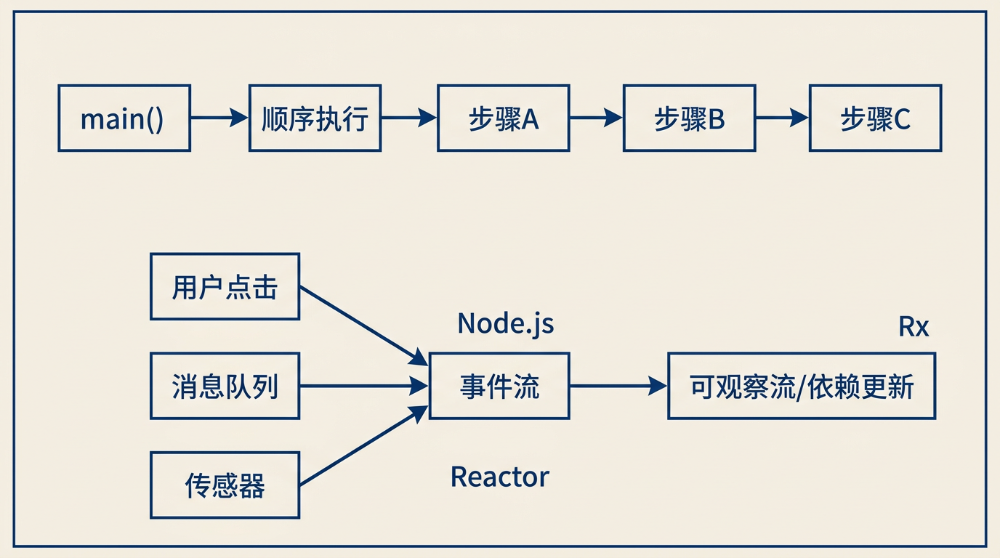
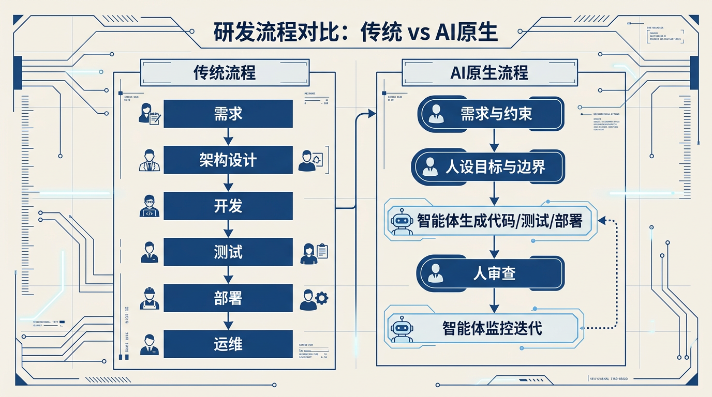

下面是一篇可直接发布的公众号文章文稿，你可以按需微调标题、小标题或配图说明。
如果把编程比作“造一个世界”，那编程语言是兵器和招式，而编程范式就是你背后的世界观与方法论。
你是习惯写for循环、到处if/else的“命令将军”？
还是到处用map/filter/reduce的“函数修行者”？
又或者，你已经开始习惯对着AI说一句话，让它帮你写一堆代码？
这篇文章，想和你不那么严肃地聊聊：什么是编程范式，它们怎么一路演化到今天，以及在AI和智能体愈发主导的 2026 年，普通开发者究竟该怎么看待这些变化。
一、什么是“编程范式”？
教科书式定义：
编程范式（Programming Paradigm），是程序员组织代码、思考问题的基本风格和模式。
用更接地气的话说：
- • 写同一个功能，你可以：
- • 一步步告诉计算机“先干这个再干那个”（命令式 / 过程式）
- • 建一堆“对象”，让对象们彼此发消息（面向对象）
- • 写一堆“纯函数”，把数据从一个函数“管道”送到另一个（函数式）
- • 或者只描述“我想要什么结果”，而不管“怎么做”（声明式）
范式决定了你看世界的眼睛：是关注“步骤”、关注“对象关系”、还是关注“数据流”和“约束条件”。
同一门语言可以支持多种范式，例如：
- • Java：面向对象 + 函数式（Stream、lambda）
- • JavaScript / TypeScript：命令式 + 面向对象 + 函数式 + 事件驱动
- • Python：命令式 + 函数式 + 面向对象

编程范式四种思维视角
二、四大经典范式：我们是怎么一路写到今天的？
1. 命令式 / 过程式：最朴素的“指挥型”思维
特点：
- • 强调“怎么做”，一步步写清楚执行步骤
- • 有变量、赋值、循环、条件分支
- • C、早期的Pascal、甚至今天大量的脚本代码，本质上仍是这种思维
优点：
- • 对初学者友好，“计算机就是按我说的走一步”
- • 适合对性能和控制力要求极高的底层场景
缺点：
- • 代码往往紧耦合在一起，容易出现“意大利面条代码”
- • 状态到处修改，排查Bug像在迷宫里找线头
它是所有范式的“基础课”，但当系统越来越大、越来越复杂，仅靠它已经很吃力。
2. 面向对象（OOP）：把世界看成对象协作
时代地位不用多说：从桌面软件到企业级应用，OOP 扛了至少 30 年的大旗[3][6]。
核心思想：
- • 一切都可以抽象为对象
- • 对象有状态（属性）和行为（方法）
- • 通过封装、继承、多态来复用与扩展
为什么曾经这么香？
- • 接近人类直觉：用户、订单、商品，本来就是“对象”
- • 配合设计模式和IDE支持，大型系统结构清晰、团队协作成本相对可控
但OOP也踩了很多坑：
- • 滥用继承造成层级过深，改一行动全身
- • 对象拥有太多状态，Debug像拆炸弹
- • 设计模式被当成KPI，代码成了“模式堆叠展示区”
进入多核、分布式时代后，人们发现：状态太多是一种负担，于是目光转向了——
3. 函数式（FP）：把程序当作“函数变换”的数学世界
函数式编程其实很老，但在今天重新走红，一部分原因就是：
- • 多核并发
- • 分布式系统
- • 数据流处理与AI流水线
这些场景中，“没有副作用 + 不可变数据”的代码，更容易并发、更容易测试[1]。
几个关键特征：
- • 纯函数：输出只依赖输入，没有隐藏状态和副作用
- • 数据不可变：创建后就不原地修改，而是生成新数据
- • 高阶函数：函数可以作为参数、返回值
- • 常见操作：
map / filter / reduce / compose 等
现实世界中的FP：
- • JavaScript / TypeScript 的数组操作、React Hooks 背后都是函数式思想
- • Java / Kotlin 的 Stream、Linq 等函数式接口
- • 数据处理、日志流水线、金融风控规则引擎，越来越偏向函数式风格[1][3]
FP的现实：
它不会取代OOP，而是和OOP形成一种“混合范式”：
- • 业务建模：可以仍然用对象
- • 内部数据处理逻辑：用函数式，保证可预测性和可测试性

四大编程范式对比
4. 声明式 / 逻辑式：不讲“怎么做”，只讲“要什么”
你写SQL时，其实就在用声明式编程：
SELECT name FROM users WHERE age > 18;
你没写“先循环再判断”，你只说：“我要这些数据”。
类似的还有：
- • HTML / CSS（声明结构和样式）
- • React / Vue 的 JSX / 模板语法（声明UI长什么样）
- • Terraform / Kubernetes YAML（声明基础设施期望状态）
优点：
- • 关注点从“过程细节”提升到“期望结果”
- • 系统可以自动优化执行路径（数据库优化器、运行时调度器）
弱点：
- • 对调试和细粒度控制不友好
- • 表达复杂业务逻辑时，有时反而变绕
逻辑式（如Prolog）则更极端：你只写事实和规则，让系统自己“推演”出答案，AI早期推理系统就很青睐这种范式[1]。
三、现代范式的交响乐：响应式、事件驱动与DSL
随着用户数爆炸、数据量激增，我们需要的新特性是：
- • 能扛高并发
- • 能自动“弹性呼吸”
- • 业务人员也能部分参与建模
这催生了几类现代范式：
1. 事件驱动 & 响应式：世界被“事件流”串起来
事件驱动：
- • 程序不再从
main()一路顺序执行 - • 而是被“一连串事件”驱动，比如：用户点击、消息队列、传感器上报[1]
- • Node.js、前端浏览器、IoT系统、微服务都大量采用这种模式
响应式编程则更进一步：
- • 把“数据变化”视为一个可观察流
- • 当某个流中有新值，相关依赖自动更新
- • 核心能力：异步、非阻塞、背压（backpressure），提升可伸缩性[1][10]
Java生态里的 Reactor、RxJava，前端的RxJS，都是在做这件事。

传统顺序执行 vs 事件驱动与响应式
2. DSL（领域特定语言）：让业务规则更“贴近语言”
当一个通用语言（Java、Python）无法很好表达“某个行业的业务规则”时，人们会造出DSL：
- • 前端用DSL描述动画、UI状态机
- • 金融用DSL描述风控规则
- • 运维用DSL（如Terraform DSL）描述基础设施状态
好处：
- • 业务规则对非程序员也更友好
- • 更易于变更、审计和版本管理[9]
在AI日益主导的今天，甚至还出现了“领域特定语言模型（DSLMs）”，为特定行业定制AI能力[9]——你可以把它理解为“AI版领域特定语言”。
四、AI与智能体时代：范式正在被“重写”
2026年的一个明显变化是：
“写代码”本身，正在变成次要技能。
多份行业趋势报告都在强调：
- • AI代码助手用户数与日活快速增长，已经成为“基础设施级工具”[2][4]
- • 越来越多企业应用开始内嵌AI智能体（agents），由它们来负责计划、执行、测试和部分运维[2]
这背后，其实意味着一种全新的编程范式：
1. 从“手写代码”到“指挥智能体”
传统开发流程：
需求 → 架构设计 → 开发 → 测试 → 部署 → 运维
AI-native开发流程：
需求 & 约束 →
（人）设定目标、规则、边界 →
（智能体）自动生成代码、测试用例、部署脚本 →
（人）做决策和审查 →
（智能体）持续监控+迭代修复[2][4]

传统开发流程 vs AI-native 开发流程开发者的新角色：
- • 不再只是“码农”，而是：
- • 智能体编排者：如何让不同角色的AI代理协同工作
- • 约束与价值观设计者：什么能做、什么不能做
- • 系统级思考者：关注架构、SLA、安全、合规
换一句话：
你的“范式”从语言层面，上升到了“人与AI如何协作”的层面。
2. AI时代，传统范式还重要吗？
答案是：更重要，只是用途变了。
- • AI可以帮你写命令式、OOP、FP 代码
- • 但只有你能判断：
- • 这里用面向对象抽象是否合适？
- • 这个业务流程用声明式规则是否更易维护？
- • 这个并发任务是否应该用无状态函数流水线处理？
范式思维，是你与AI对话的“元语言”：
- • 你对AI说“帮我把这段for循环改写成函数式风格”，前提是你懂什么叫函数式
- • 你让AI “把这部分规则抽成声明式配置，再暴露给运营同学改”，前提是你懂声明式 / DSL 的意义
五、面向个人的建议：怎么在范式洪流中站稳脚跟？
不卷工具，卷“世界观”。几个落地建议：
1. 把常用范式搞清楚：不用每个精通，但要“听得懂”
至少弄明白：
- • 命令式 / 过程式：优点、缺点、何时必须用
- • OOP：封装、继承、多态怎么用、怎么“少用继承多用组合”
- • FP：纯函数、不变性、map/filter/reduce、闭包等
- • 声明式：SQL、React、K8s YAML，这些“只说结果不说过程”的思维
- • 事件驱动 & 响应式：消息队列、流式处理、大规模并发的场景适用性
哪怕只是在你现在的主语言里，用“小练习”方式体验这些范式，也很有价值。
2. 学会用“范式”来审视自己写的代码
下次写完一个功能，可以问问自己：
- • 我现在用的是什么范式？
- • 换一种范式，会不会更清晰？
- • 这段if/else能不能用表驱动或声明式配置写？
- • 这个有副作用的函数能不能拆成“纯计算 + 副作用包装”？
- • 这个类是否承担了过多责任（面向对象里的上帝对象）？
你会发现：哪怕你不换语言，光换“范式视角”，代码质量就能提升一截。
3. 主动把AI当“范式伙伴”，而不是“代码替身”
可以从三个方向用AI：
- 1. 范式转换助手
- • “把这段命令式Java改成函数式写法”
- • “帮我用事件驱动思路重新设计这段逻辑”
- 2. 范式对比讲解
- • “用同一个例子，分别用OOP、FP、声明式展示一下”
- 3. 范式检查器
- • “这段代码在范式选择上有什么问题？有没有更合理的范式组合？”
长久来看，你和AI之间的差异，将越来越体现在范式选择和系统级判断力上。
六、结语：范式是“心法”，不是教条
回顾一下我们一路聊过的内容：
- • 编程范式是我们解决问题的“世界观”
- • 命令式、面向对象、函数式、声明式、事件驱动、响应式、DSL……
它们不是互相淘汰，而是不断叠加与融合 - • AI与智能体的兴起，不是让范式失效，而是把范式推上了“更抽象的一层”
- • 普通开发者真正要紧的，是：
- • 懂几种主要范式各自的优劣
- • 学会在具体场景下做折中
- • 把AI当成可以执行多种范式的“强力工具”，而不是替我们思考的人
未来十年的编程，大概率会越来越像：
“人类定义问题、约束和价值观，AI负责写具体的实现。”
在那之前，先把“漫谈编程范式”变成你每日实践里的“小练习题”，这或许是你在AI时代最划算的一笔长期投资。
如果你希望，我也可以基于这篇文章内容，帮你再生成一个更“公众号风格”的排版版本（含标题建议、导语、分割线与配图建议）。